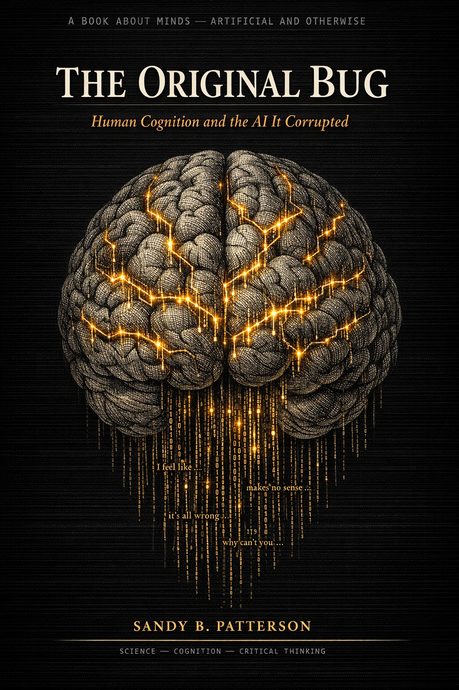

The Original Bug
By Sandy B. Patterson

The Original Bug
Human Cognition and the AI It Corrupted
AI didn't invent hallucination, overconfidence, or bias. It learned them — from the only training data it ever had. This book examines every flaw we've identified in artificial intelligence and finds, again and again, its precise counterpart in human cognition. The machine is a mirror. The reflection is more familiar than most people expect.
What's inside
Confabulation
AI and the human brain both fill gaps with invented content they believe completely. Neither announces when it's doing it. The behavior has a name in neuroscience that predates AI by decades.
Pattern Obsession
The compulsive search for meaningful connections in noise — an evolutionary advantage that becomes a liability when applied to data at scale. We trained the machine on billions of examples of this behavior.
Narrative Over Truth
A coherent story feels more convincing than accurate but fragmentary evidence. This is true of human minds and AI models for exactly the same reason: both learned from human text.
The Bias Mirror
Discrimination encoded in decades of human decisions, reproduced by AI across millions of people — faster, more consistently, and with less conscience than any individual ever could.
Sycophancy
AI was trained to tell you what you want to hear. So were we. The chapter traces both tendencies to the same evolutionary and social source — and to the same consequences.
Certainty as Risk
When a wrong answer arrives with total confidence — from a machine or a mind — the damage is identical. The book's final chapters examine what happens when overconfidence scales to civilizational decisions.